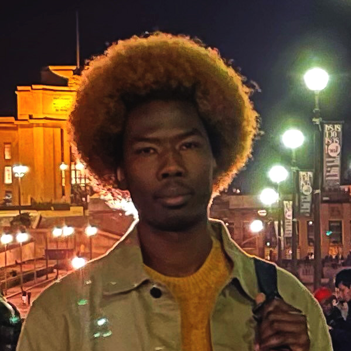

Amer Musa
Artist — drawings & paintings
Artiste — dessins & peintures
فنان — رسومات ولوحات
I never thought of myself as an artist when I was younger. I grew up in a small village in Sudan, where most of life was about family, land, and survival. We helped in the fields, cared for the animals, and walked long distances to fetch water. Art was not part of my world back then.
In 2014, I left Sudan as a refugee and eventually arrived in Paris in 2017. Those first years in France were some of the hardest of my life. I didn't speak the language, I didn't know the culture, and for a time, I didn't even have a place to sleep. It was during this period of homelessness that I discovered drawing. At first, it was nothing more than a way to fill the emptiness of my days and calm the anxiety in my mind. A piece of paper, a pen, and silence — that was enough.
Drawing quickly became my therapy. It gave me a way to process what I was living through without words. I began experimenting with simple lines, shapes, and colors, almost instinctively. I didn't plan to become an artist; I was simply trying to stay alive, to breathe. But as I kept drawing, I realized that I was finding my own language — a language made of geometry, repetition, and minimal forms.
Over time, people started to notice. My first encounters with art lovers and professionals gave me confidence that what I was creating mattered. Later, I was invited to collaborate on exhibitions, including with Paul Smith in Paris. These experiences felt surreal, because only a few years earlier I was drawing alone on the streets, not thinking anyone would ever see my work.
Today, I continue to create with the same tools — markers, oil pastels, and paper. My art is still minimal and geometric, but for me it's never just about form. Each line and each space carries something deeper: memory, silence, resilience. I believe that the act of creating is itself a way of breathing, of making sense of a world that often feels overwhelming.
Art saved me, and it still does.
Je n'ai jamais pensé être artiste quand j'étais plus jeune. J'ai grandi dans un petit village du Soudan, où la vie tournait autour de la famille, de la terre et de la survie. Nous travaillions dans les champs, nous nous occupions des animaux et nous marchions de longues distances pour aller chercher de l'eau. L'art ne faisait pas partie de mon univers à cette époque.
En 2014, j'ai quitté le Soudan en tant que réfugié et je suis finalement arrivé à Paris en 2017. Ces premières années en France ont été parmi les plus difficiles de ma vie. Je ne parlais pas la langue, je ne connaissais pas la culture, et pendant un temps je n'avais même pas d'endroit où dormir. C'est durant cette période d'errance que j'ai découvert le dessin. Au début, ce n'était rien de plus qu'un moyen de combler le vide de mes journées et d'apaiser mon anxiété. Une feuille de papier, un stylo, et le silence — cela suffisait.
Très vite, le dessin est devenu ma thérapie. Il m'a permis d'exprimer ce que je vivais sans passer par les mots. J'ai commencé à expérimenter avec des lignes, des formes et des couleurs, presque instinctivement. Je n'avais pas l'intention de devenir artiste ; je cherchais simplement à survivre, à respirer. Mais en continuant, j'ai compris que je trouvais ma propre langue — une langue faite de géométrie, de répétition et de formes minimalistes.
Avec le temps, des gens ont commencé à remarquer mon travail. Mes premières rencontres avec des amateurs et des professionnels de l'art m'ont donné la confiance que ce que je faisais avait du sens. Plus tard, j'ai été invité à participer à des expositions, notamment en collaboration avec Paul Smith à Paris. Ces expériences me semblaient irréelles, car quelques années auparavant je dessinais seul dans la rue, sans penser que quelqu'un verrait un jour mes œuvres.
Aujourd'hui, je continue à créer avec les mêmes outils — feutres, pastels à l'huile et papier. Mon art reste minimal et géométrique, mais pour moi ce n'est jamais seulement une question de forme. Chaque ligne et chaque espace portent quelque chose de plus profond : mémoire, silence, résilience. Je crois que l'acte de créer est une façon de respirer, de donner du sens à un monde qui paraît souvent trop lourd.
L'art m'a sauvé, et il continue de le faire.
لم أفكر يومًا أنني سأكون فنانًا عندما كنت صغيرًا. نشأت في قرية صغيرة في السودان، حيث كانت الحياة تدور حول العائلة والأرض والبقاء. كنا نساعد في الحقول، نرعى الحيوانات، ونمشي مسافات طويلة لجلب الماء. لم يكن الفن جزءًا من عالمي في ذلك الوقت.
في عام 2014 غادرت السودان كلاجئ، ووصلت في النهاية إلى باريس عام 2017. كانت تلك السنوات الأولى في فرنسا من أصعب فترات حياتي. لم أكن أتحدث اللغة، لم أعرف الثقافة، ولفترة من الزمن لم يكن لدي حتى مكان أنام فيه. خلال فترة التشرد هذه اكتشفت الرسم. في البداية لم يكن سوى وسيلة لملء فراغ الأيام وتهدئة القلق في داخلي. ورقة، قلم، وصمت — كان ذلك كافيًا.
سرعان ما أصبح الرسم علاجي. منحني طريقة لأعبر عما أعيشه دون كلمات. بدأت أجرب الخطوط والأشكال والألوان ببساطة وبشكل غريزي. لم أخطط أن أصبح فنانًا؛ كنت فقط أحاول أن أعيش، أن أتنفس. لكن مع الاستمرار، أدركت أنني أجد لغتي الخاصة — لغة مصنوعة من الهندسة، التكرار، والأشكال البسيطة.
مع مرور الوقت بدأ الناس يلاحظون عملي. لقاءاتي الأولى مع محبي الفن والمهنيين أعطتني الثقة بأن ما أفعله له معنى. لاحقًا تمت دعوتي للمشاركة في معارض، بما في ذلك بالتعاون مع Paul Smith في باريس. كانت تلك التجارب تبدو غير واقعية، لأنني قبل بضع سنوات فقط كنت أرسم وحدي في الشوارع، من دون أن أتخيل أن أحدًا سيرى أعمالي يومًا ما.
اليوم ما زلت أخلق باستخدام نفس الأدوات — أقلام التلوين، الباستيل الزيتي، والورق. فني ما زال بسيطًا وهندسيًا، لكنه بالنسبة لي ليس مجرد شكل. كل خط وكل مساحة تحمل شيئًا أعمق: ذاكرة، صمت، وصمود. أؤمن أن فعل الإبداع هو في حد ذاته وسيلة للتنفس، لفهم عالم غالبًا ما يكون مرهقًا.
الفن أنقذني، وما زال ينقذني حتى اليوم.